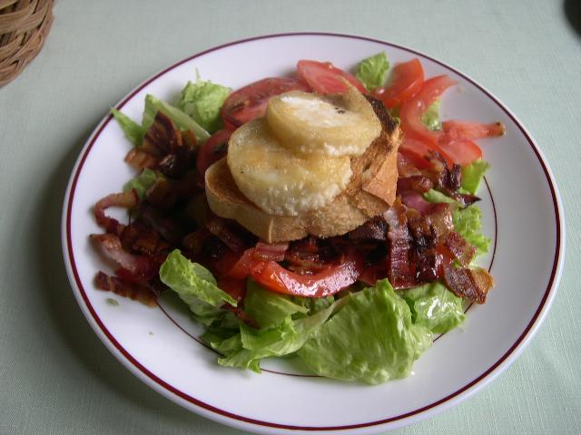

The first place ranking includes country of the Rising Sun.
Its citizens are renowned for their long lives. With consumption of a large number of cruciferous vegetables such as kale,
broccoli, zucchini, local residents differ harmony.
And fish and soy used as the main source of protein promote a healthy heart.
It may seem strange that a fairly monotonous diet,
80% consisting of rice, was named one of the healthiest in the world.
However, Singaporeans seize rice with lots of vegetables.
Fish and meat are being used as the main source of protein in various culture,
are extremely rare on the tables of local residents.
The passion to satisfy the hunger for sweet things Singaporeans are eating fresh tropical fruits
or something cooked out of them such as puddings and casseroles without adding sugar.
That version of Chinese cuisine,
which you can while having a visit to your hometown Chinese restaurant is quite far from what the Chinese are eating at home.
Basic diet is made up of various vegetables, fruits, whole grains and legumes.

It is unlikely that life expectancy is associated exclusively with the Swedish food habits.
Most likely, the strong influence of the high level of medicine and life care in general.
In this northern country they use only a little of fruits and vegetables and the basic diet are dairy products,
brown bread, fish and berries.
Most people have heard a lot about the famous French paradox.
This nation does not gain weight, despite the ardent love of the fatty cheese and chocolate,
which certainly can not be called low-calorie.

| Country | Top Number |
|---|---|
| Japan | Top 1 |
| Singapore | Top 2 |
| China | Top 3 |
| Sweden | Top 4 |
| France | Top 5 |